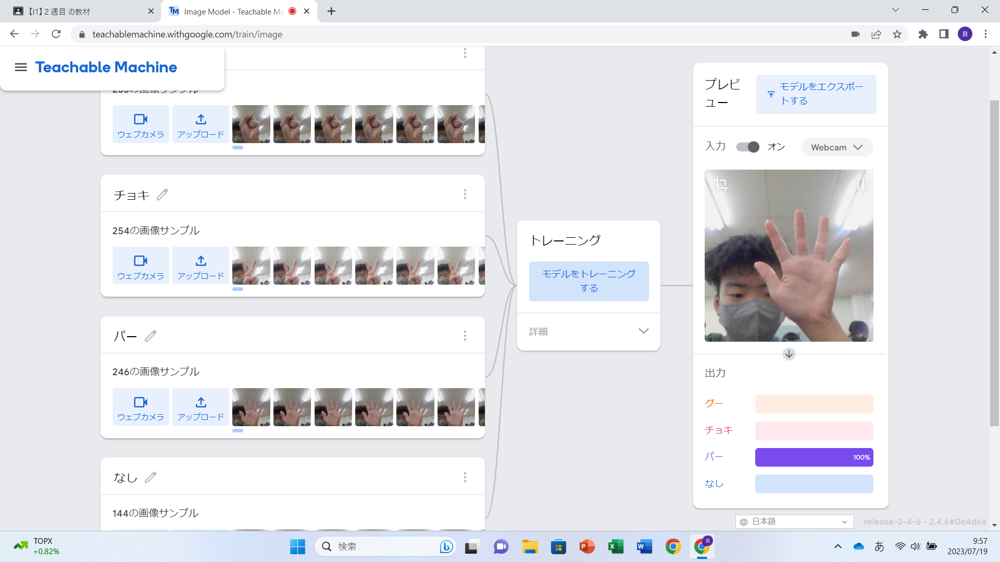
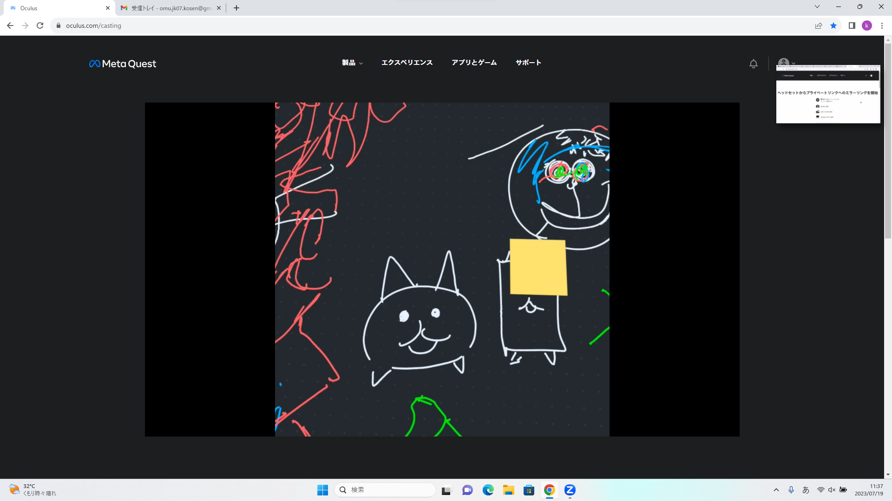

第2週目
2-1 １週目のレポートをHTMLで作る
１週目のレポート
1.内容
1週目に体験した内容をレポートにまとめ、Githubを使用して自分オリジナルのレポートのwebサイトを作成した。
2.感想
Githubというサイトを使用して、自分オリジナルのwebサイトを作成してみて、webサイトは誰でも作ることが出来るものであること、
webサイトは誰でも閲覧することが出来るものであることが分かったので、webサイトに個人を特定できるような情報をせ書いてしまうと危険であると思った。
2-2 機械学習体験

1.内容
Teachable Machineというサイトを利用して、AIにグー、チョキ、パーの形を学習させ、それらを見分けられるようにした。
2.感想
AIにグー、チョキ、パー、の形を写真から学習させて、手の形を私が思っていたよりも正確に判別することが分かったので、さらに高度なものの判別をすることも可能なのか
実験したいと思った。
2-3 VR（バーチャルリアリティー：Virtual Reality）会議室の体験

1.内容
VRゴーグルを使用して、workroomで絵を描くというメタバース体験を行った。
2.感想
人生で初めてVRゴーグルを利用したので、不慣れではあったが自分なりにうまく絵を描くことが出来たことや、VRゴーグルを使用したときの景色の見え方、操作方法、他のプレイヤー
が絵を描いている動きを見るなどの貴重な体験できたことに感動した。